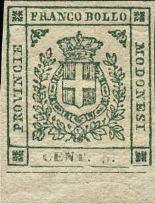
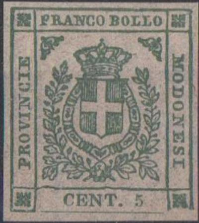
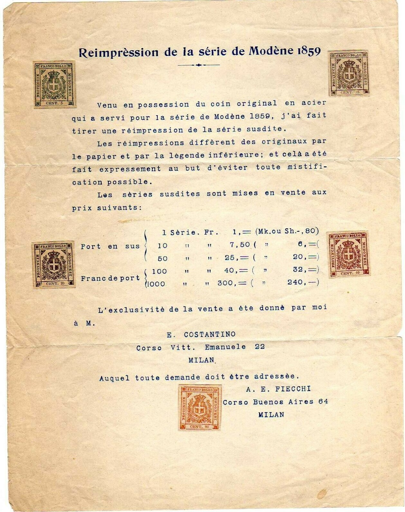
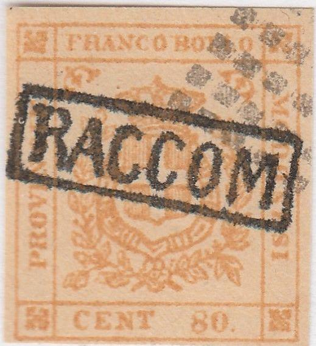

{kind=link}



Genuine stamps
Return To Catalogue - Modena 1859 issue - Italy
Note: on my website many of the
pictures can not be seen! They are of course present in the
catalogue;
contact me if you want to purchase the catalogue.

Genuine stamps
(I presume these stamps are reprints)



Note also the wavy line above "CENT" in the above 5,
15, 20 and 40 c reprints.
Reprints on very thin paper were made at the Milan Exhibition in 1906. The word "CENT" and the value are less thick than in the genuine stamps, furthermore there is no dot after the value. In all the reprints I've seen there is an indentation in the frameline above the first "L" of "BOLLO" and the line below the right bottom corner ornament is missing. In some of these reprints there is a small bar in the frameline just in front of the "C" of "CENT" (see the 80 c value above). The right hand bottom square is always open at the bottom. Other sources (http://forgeriesofitalianstates.com/Modena/Modena.htm) say that these reprints were made in 1896. The Billig handbook of Modena says these reprints were made in Milan by stamp dealer "F.". "F" is presumably A.E. Fiecchi (see image below).



Forgery detection: the line at the bottom of the stamp does not touch the frame on either side in the genuine stamps.


(note the continuous line and the leaves in the lower left
corner, no stop behind "CENT")
The Spiro/Fournier forgeries can be detected by the fact that the bottom frame line is continuous. There must be a stop behind "CENT" and behind the value in the genuine stamps, the above forgeries don't have this. Fournier offers these forgeries (all 5 values) for 1.50 Swiss Francs in his 1914 pricelist (as second choice forgeries). The cancels are very peculiar: dots, lines or a rectangle of small squares. I've seen whole sheets of 25 forgeries (5x5) with both the lines and dots cancels applied to these sheets.


This forgery, further 'enhanced' with a purple cancel or a
"RACCOM" in a box cancel. Also a 40 c forgery with the
dot cancel in the upper right hand side overprinted with another
more convincing cancel.
Page from a Fournier Album.
{kind=link}
{kind=link}